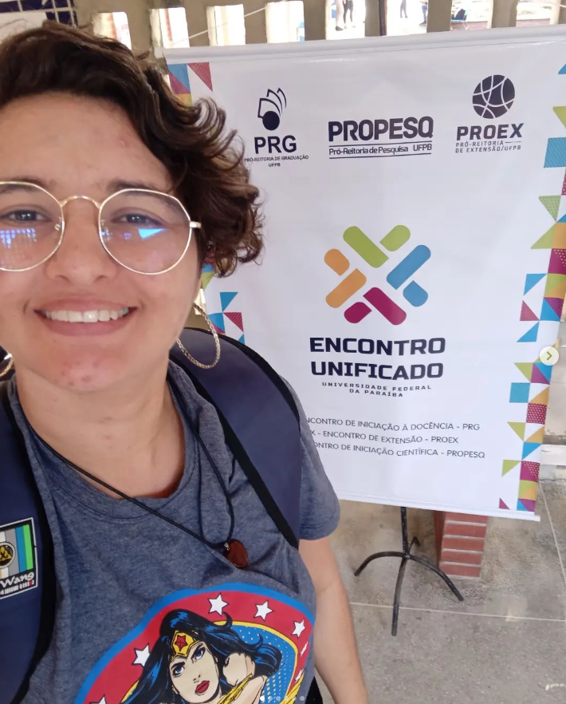

Oi! Sou a Cinthia Lindolfo estou caminhando para ser desenvolvedora Frontend e Analista de Dados/Projetos
👩💻 Sou graduanda em Sistemas de Informação pela UFPB, iniciei minha jornada acadêmica em 2021.1. Desde então, tenho participado ativamente em diversos projetos, como bolsista, voluntária e monitora.
Essas experiências têm sido cruciais para aplicar os conhecimentos adquiridos durante o curso, além de me proporcionar a oportunidade de aprender novas ferramentas para contribuir em projetos inovadores. Estou ansiosa para continuar explorando e crescendo durante essa jornada acadêmica empolgante!
Saiba Mais!
